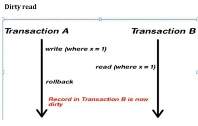
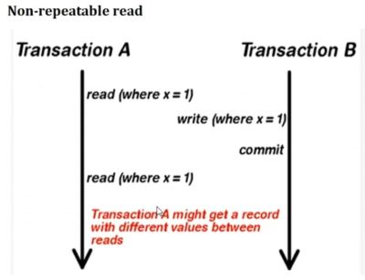
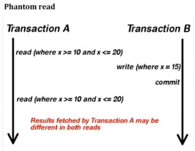

1. Spring Transactions
A database transaction is a sequence of actions that are treated as a single unit of work. These actions should either complete entirely or take no effect at all. Transaction management is an important part of RDBMS-oriented enterprise application to ensure data integrity and consistency. The concept of transactions can be described with the following four key properties described as ACID
2. ACID Properties
- Atomicity – A transaction should be treated as a single unit of operation, which means either the entire sequence of operations is successful or unsuccessful.
- Consistency – This represents the consistency of the referential integrity of the database, unique primary keys in tables, etc.
- Isolation – There may be many transaction processing with the same data set at the same time. Each transaction should be isolated from others to prevent data corruption.
- Durability – Once a transaction has completed, the results of this transaction have to be made permanent and cannot be erased from the database due to system failure.
3. Transaction Isolation Levels
Transaction isolation level is a concept that is not exclusive to the Spring framework. It is applied to transactions in general and is directly related with the ACID transaction properties. Isolation level defines how the changes made to some data repository by one transaction affect other simultaneous concurrent transactions, and also how and when that changed data becomes available to other transactions. When we define a transaction using the Spring framework we are also able to configure in which isolation level that same transaction will be executed.
Usage example
Using the @Transactional annotation we can define the isolation level of a Spring managed bean transactional method. This means that the transaction in which this method is executed will run with that isolation level:
- Dirty Read – A Dirty read is a situation when a transaction reads data that has not yet been committed. For example, Let's say transaction 1 updates a row and leaves it uncommitted, meanwhile, Transaction 2 reads the updated row. If transaction 1 rolls back the change, transaction 2 will have read data that is considered never to have existed. 
- Non Repeatable read – Non Repeatable read occurs when a transaction reads the same row twice and gets a different value each time. For example, suppose transaction T1 reads data. Due to concurrency, another transaction T2 updates the same data and commit, Now if transaction T1 rereads the same data, it will retrieve a different value. 
- Phantom Read – Phantom Read occurs when two same queries are executed, but the rows retrieved by the two, are different. For example, suppose transaction T1 retrieves a set of rows that satisfy some search criteria. Now, Transaction T2 generates some new rows that match the search criteria for transaction T1. If transaction T1 re-executes the statement that reads the rows, it gets a different set of rows this time. 
ISOLATION_READ_UNCOMMITTED – Allows to read changes that haven't yet been committed. It suffer from Dirty reads, Nonrepeatable read and Phantom read.
@Transactional(isolation = Isolation.READ_UNCOMMITTED)
public Account getAccount(int id) {
return accountRepository.findById(id).get();
}
ISOLATION_READ_COMMITTED – Allows reads from concurrent transactions that have been committed. It may suffer from Nonrepeatable read and Phantom read Because other transactions may be updating the data.
@Transactional(isolation = Isolation.READ_COMMITTED)
public Account getAccount(int id) {
return accountRepository.findById(id).get();
}
ISOLATION_REPEATABLE_READ – Multiple reads of the same field will yield the same results until it is changed by itself. It may suffer from Phantom read Because other transactions may be inserting the data.
@Transactional(isolation = Isolation.REPEATABLE_READ)
public void checkBalance(int id) {
Account acc1 = accountRepository.findById(id).get();
// some other transaction modifies it in the meantime
Account acc2 = accountRepository.findById(id).get();
// acc1 == acc2 is guaranteed
}
ISOLATION_SERIALIZABLE – SERIALIZABLE isolation level is the most restrictive of all isolation levels. Transactions are executed with locking at all levels (read, range and write locking) so they appear as if they were executed in a serialized way. This leads to a scenario where none of the issues mentioned above may occur, but in the other way we don't allow transaction concurrency and consequently introduce a performance penalty.
@Transactional(isolation = Isolation.SERIALIZABLE)
public List<Account> getAccountsAboveBalance(double amount) {
return accountRepository.findByBalanceGreaterThan(amount);
}
To summarize, the existing relationship between isolation level and read phenomena may be expressed in the following table :
| Isolation Level | Dirty Read | Non Repeatable Read | Phantom Read |
|---|---|---|---|
| READ_UNCOMMITTED | Yes | Yes | Yes |
| READ_COMMITTED | No | Yes | Yes |
| REPEATABLE_READ | No | No | Yes |
| SERIALIZABLE | No | No | No |
4. Transaction Propagation Levels
Propagation level in spring decides if the spring has to create a new transaction or the same transaction can be used to perform a database operation. Transaction Propagation Types: There are seven types of Transaction Propagation: REQUIRED is Default Transaction Propagation.
- REQUIRED
- REQUIRES_NEW
- NESTED
- SUPPORTS
- NOT_SUPPORTED
- NEVER
- MANDATORY
1. REQUIRED Spring REQUIRED behavior means that the same transaction will be used if there is an already opened transaction in the current bean method execution context. If there is no existing transaction the Spring container will create a new one. If multiple methods configured as REQUIRED behavior are called in a nested way they will be assigned distinct logical transactions but they will all share the same physical transaction. In short this means that if an inner method causes a transaction to rollback, the outer method will fail to commit and will also rollback the transaction.
Note that the inner method throws a RuntimeException and is annotated with REQUIRED behavior. This means that it will use the same transaction as the outer bean, so the outer transaction will fail to commit and will also rollback.
Note: The only exceptions that set a transaction to rollback state by default are the unchecked exceptions (likeRuntimeException). If you want checked exceptions to also set transactions to rollback you must configure them to do so.
@Transactional(propagation = Propagation.REQUIRED)
public void methodB() {
// Joins caller's transaction
}
2. REQUIRES_NEW behavior means that a new physical transaction will always be created by the container. In other words the inner transaction may commit or rollback independently of the outer transaction, i.e. the outer transaction will not be affected by the inner transaction result: they will run in distinct physical transactions.
The inner method is annotated with REQUIRES_NEW and throws a RuntimeException so it will set its transaction to rollback but will not affect the outer transaction. The outer transaction is paused when the inner transaction starts and then resumes after the inner transaction is Concluded. They run independently of each other so the outer transaction may commit successfully.
3. NESTED The NESTED behavior makes nested Spring transactions to use the same physical transaction but sets savepoints between nested invocations so inner transactions may also rollback independently of outer transactions. This may be familiar to JDBC aware developers as the savepoints are achieved with JDBC savepoints, so this behavior should only be used with Spring JDBC managed transactions.
4. SUPPORTS The SUPPORTS behavior will execute in the scope of a transaction if an opened transaction already exists. If there isn't an already opened transaction the method will execute anyway but in a non-transactional way.
5. NOT_SUPPORTED The NOT_SUPPORTED behavior The NOT_SUPPORTED behavior will execute outside of the scope of any transaction. If an opened transaction already exists it will be paused.
6. NEVER The NEVER behavior states that an existing opened transaction must not already exist. If a transaction exists an exception will be thrown by the container.
7. MANDATORY The MANDATORY behavior states that an existing opened transaction must already exist. If not an exception will be thrown by the container.
| Propagation | Behavior |
|---|---|
| REQUIRED | Always executes in a transaction. If there is any existing transaction it uses it. If none exists then only a new one is created |
| SUPPORTS | It may or may not run in a transaction. If current transaction exists then it is supported. If none exists then gets executed with out transaction. |
| NOT_SUPPORTED | Always executes without a transaction. If there is any existing transaction it gets suspended |
| REQUIRES_NEW | Always executes in a new transaction. If there is any existing transaction it gets suspended |
| NEVER | Always executes with out any transaction. It throws an exception if there is an existing transaction |
| MANDATORY | Always executes in a transaction. If there is any existing transaction it is used. If there is no existing transaction it will throw an exception. |
5. Cascade Types JPA
Cascade in JPA means automatically propagating operations (like persist, merge, delete) from a parent entity to its associated child entities.
For example:
- When you save a
Department, it can automatically save all itsEmployeeobjects.
| Cascade Type | Description |
|---|---|
| PERSIST | Propagates persist() to child (Saving new parent and children) |
| MERGE | Propagates merge() to child (Updating entire object graph) |
| REMOVE | Propagates remove() (delete) to child (Deleting parent and its children) |
| REFRESH | Refreshes child from database (Complete sync with DB) |
| DETACH | Detaches child from persistence context (Unloading from persistence unit) |
| ALL | Applies all above cascade types (All of the above) |
@OneToMany(mappedBy = "department", cascade = CascadeType.ALL)
private List<Employee> employees;
1.CascadeType.PERSIST
Department dept = new Department();
dept.setName("IT");
Employee emp1 = new Employee();
emp1.setName("Ravi");
emp1.setDepartment(dept);
dept.getEmployees().add(emp1);
entityManager.persist(dept); // Will also persist emp1
• Without cascade, this would throw an error unless you also explicitly call persist(emp1).
2.CascadeType.MERGE
Used when updating an existing parent and its children.
dept.setName("IT - Updated");
emp1.setName("Ravi K");
entityManager.merge(dept); // Merges both dept and emp1
3.CascadeType.REMOVE
entityManager.remove(dept); // Will also remove all employees under this dept
△ Be careful: deleting parent will delete all associated children.
4.CascadeType.REFRESH
Reloads entity from the database and applies changes to children too.
entityManager.refresh(dept); // Employees will also be refreshed
5. CascadeType.DETACH
Removes entity and its children from the persistence context.
entityManager.detach(dept); // Employees will also be detached
6. CascadeType.ALL
Shortcut for:
CascadeType.PERSIST, MERGE, REMOVE, REFRESH, DETACH
Common for @OneToMany and @OneToOne relationships.